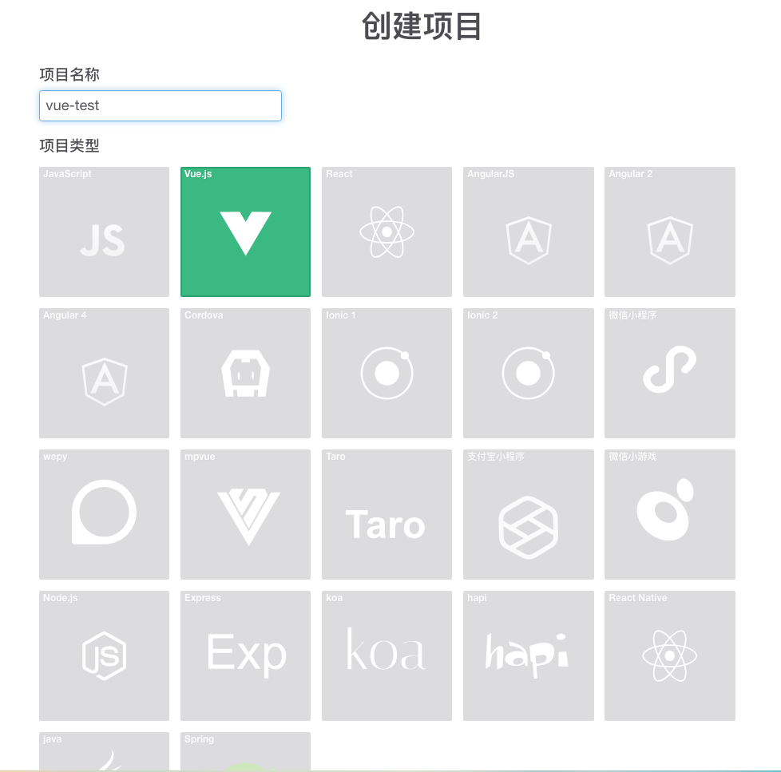
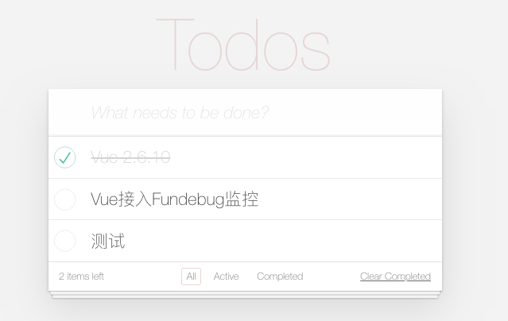
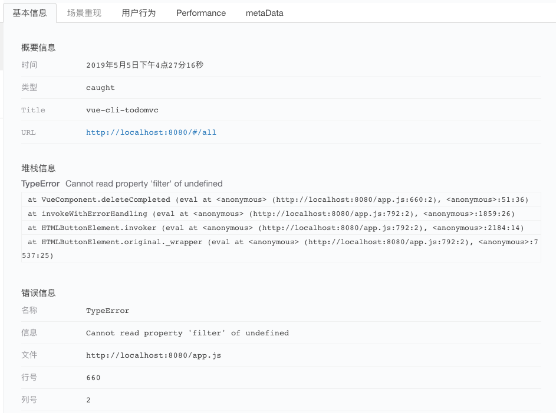
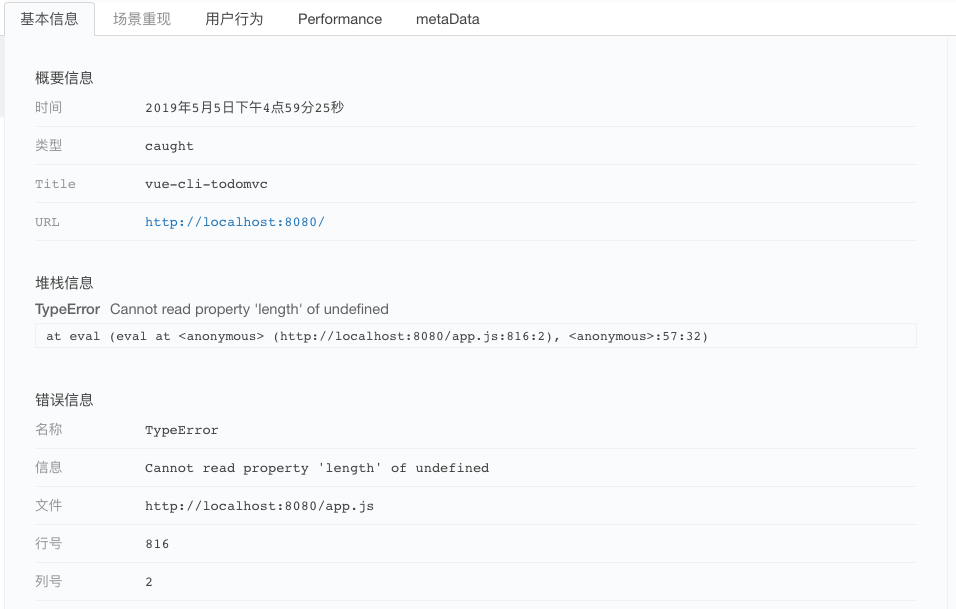

原文连接:https://www.cnblogs.com/fundebug/p/10855126.html
摘要： Fundebug 的 JavaScript 错误监控插件同步支持 Vue.js 异步错误监控。
Vue.js 从诞生至今已经 5 年，尤大在今年 2 月份发布了重大更新，即Vue 2.6。更新包括新增 scoped slot 语法、性能提升、动态指令参数等等。其中我们最关注的是错误处理。
异步错误处理
Vue 的内置错误处理机制（组件内 errorCaptured hook 和全局 errorHandler hook）现在也会捕获 v-on 处理程序内部的错误。此外，如果任意一个生命周期 hook 或事件处理程序执行了异步操作，现在可以从函数中返回一个 Promise，Promise 链中任何一个未被捕获的错误都会被发送给错误处理程序。如果使用了 async/await，则会变得更加容易，因为异步函数隐式返回 Promise：
export default {
async mounted() {
// if an async error is thrown here, it now will get
// caught by errorCaptured and Vue.config.errorHandler
this.posts = await api.getPosts();
}
};根据官方介绍，错误处理的改进包括两个方面：
- 捕获 v-on 处理程序内部的错误
- 异步 Promise 错误
Fundebug作为最专业的 BUG(错误)监控服务平台，已经服务数千家企业，数万名开发者。据统计，所有的前端项目中，有22.5%使用 Vue.js 开发。之前有使用 Vue.js 框架开发的客户反馈有 bug 监控不到。此次 Vue.js 更新，我们对JavaScript 的监控插件做了相应的更新，来更好地支持使用 Vue.js 框架开发的应用错误的监控。
错误监控测试(TodoMVC)
1. 通过 v-on 定义事件
我们使用经典的 todoMVC 项目来进行测试。
首先接入 Fundebug 监控插件，在 Fundebug 官网创建一个 Vue.js 监控项目。

接下来根据接入代码，安装 Fundebug JavaScript 和 Vue 插件：
- 通过
npm安装fundebug-javascript与fundebug-vue
npm install fundebug-javascript fundebug-vue --save- 配置
apikey
import * as fundebug from "fundebug-javascript";
import fundebugVue from "fundebug-vue";
fundebug.apikey = "API-KEY";
fundebugVue(fundebug, Vue);然后，我们对右下角的Clear Completed按钮对应的代码进行更改，通过v-on来定义点击事件，然后对应的deleteCompleted函数故意将todos写成todo。
<button class="clear-completed" v-show="completed" v-on:click="deleteCompleted">
Clear Completed
</button> deleteCompleted() {
this.todos = this.todo.filter(todo => !todo.completed);
}点击Clear Completed触发报错：

Fundebug 成功捕获该错误:

2. 异步 Promise 错误
通过axios发送一个 GET 请求获取数据，然后将返回数据处理。假定不小心将data写成了date，那么data.length会触发错误。
deleteCompleted() {
return axios
.get("https://jsonplaceholder.typicode.com/todos/")
.then(response => {
let data = response.date;
let len = data.length;
});
}程序运行后，Fundebug 成功捕获该错误：

总结
Vue.js 更新到 2.6.10，对错误处理提供了更加强大的支持。Fundebug 的 JavaScript 监控插件支持 Vue.js 项目中v-on和异步错误的监控。
关于Fundebug
Fundebug专注于JavaScript、微信小程序、微信小游戏、支付宝小程序、React Native、Node.js和Java线上应用实时BUG监控。 自从2016年双十一正式上线，Fundebug累计处理了10亿+错误事件，付费客户有Google、360、金山软件、百姓网等众多品牌企业。欢迎大家免费试用！

版权声明
转载时请注明作者Fundebug以及本文地址：https://blog.fundebug.com/2019/05/13/fundebug-support-vue-2-6-10/